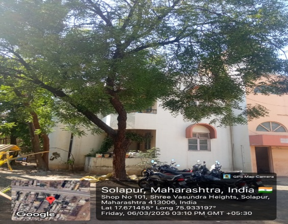

Neem is a fast-growing evergreen tree native to the Indian subcontinent, capable of reaching heights of 15–20 metres. It is one of the most researched plants in the world due to its extraordinary range of biological activities. The tree is recognised by its spreading branches, dark green compound leaves, and small white fragrant flowers. Every part of the neem tree — leaves, bark, seeds, roots, and flowers — possesses medicinal value.
Neem is a cornerstone of Ayurvedic medicine, prized for its antifungal, antibacterial, antiviral, anti-inflammatory, and anticancer properties. It plays an essential role in traditional oral health practices across South Asia.
Neem has been used in Ayurvedic medicine for over 4000 years. Ancient Sanskrit texts refer to neem as "Sarva Roga Nivarini" — the curer of all ailments. The Charaka Samhita and Sushruta Samhita, two of the oldest Ayurvedic texts, extensively document its use in treating skin diseases, fevers, infections, and dental disorders.
Neem twigs have traditionally been used as natural toothbrushes across India and Africa, a practice now validated by modern dentistry research confirming their antibacterial and anti-inflammatory properties.
Neem originated in the Indian subcontinent and Myanmar. Today it is widely distributed across tropical and subtropical regions including India, Pakistan, Bangladesh, Sri Lanka, Southeast Asia, Africa, and parts of the Americas. It grows well in semi-arid conditions, tolerates poor soil quality, and is commonly found along roadsides, in villages, and in agricultural settings across India.
Several parts of the neem plant are used in oral cancer research and treatment:
Modern scientific research has validated the anticancer properties of neem compounds. Key findings include:
| Scientific Name | Plant Part | Phytochemical Class | Compound | Activity | PubChem ID |
|---|---|---|---|---|---|
| Azadirachta indica | Leaves | Limonoid (Triterpenoid) | Nimbolide |
Apoptosis induction
Anti-inflammatory
Antimicrobial
Antioxidant
Anticancer
|
12313376 |
| Azadirachta indica | Seeds | Limonoid (Tetranortriterpenoid) | Azadirachtin |
Anti-proliferative
Anti-inflammatory
Antimicrobial
Antioxidant
Anticancer
|
5281303 |
| Azadirachta indica | Bark | Flavonoid | Catechin |
Anti-proliferative
Anti-inflammatory
Antimicrobial
Antioxidant
Anticancer
|
9064 |
| Azadirachta indica | Flowers & Fruits | Limonoid (Triterpenoid) | Azadiradione |
Anti-proliferative
Anti-inflammatory
Antimicrobial
Antioxidant
Anticancer
|
12308714 |